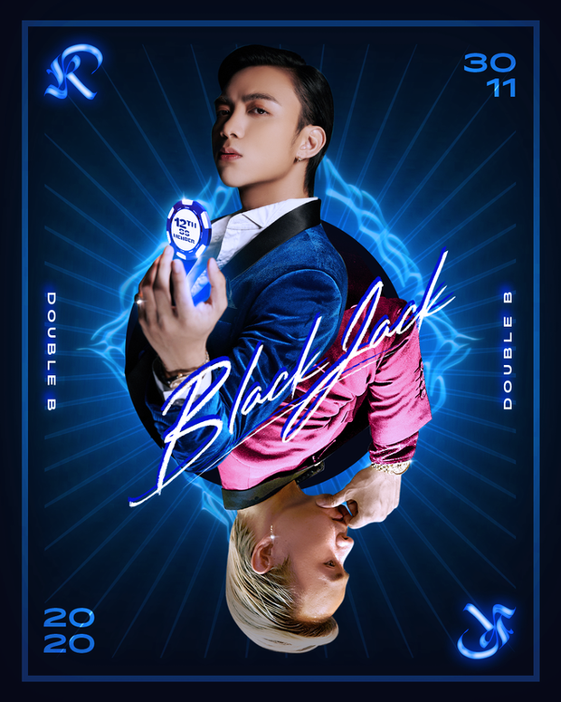
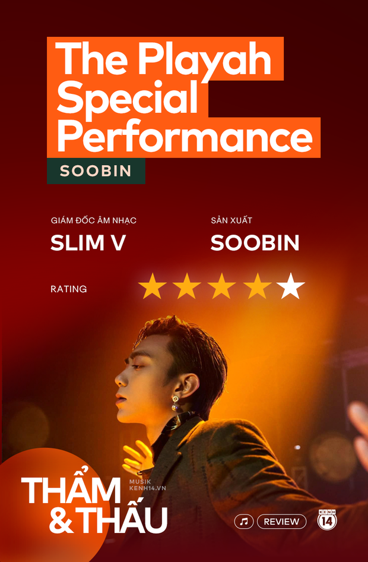

The Playah - lẽ ra Soobin nên comeback thế này từ đầu!
Long Hoàng , Theo Trí Thức Trẻ - 23 /05/2021
Soobin cùng SlimV dàn dựng sân khấu đặc biệt cho EP The Playah như một vở nhạc kịch đặc sắc, và đưa vào hầu hết những thứ mà lẽ ra Soobin nên thực hiện ngay từ đầu dự án này. EP The Playah mà Soobin thực hiện vào năm ngoái khó có thể nói là thành công. Single mà Soobin kết hợp với Binz đạt được một số thành tích, nhưng rõ ràng khi so với sự đầu tư và mức độ kỳ vọng của ekip, nó vẫn chưa đủ thỏa mãn. Lý do lớn nhất cho điều này, phần lớn là đến từ Soobin.
Nhiều khán giả đã bình luận rằng Soobin là một người sở hữu giọng hát trái ngược với cá tính và tham vọng trong âm nhạc của anh. Rõ ràng, Soobin luôn khao khát trình diễn các bản dance và R&B, gắn bó với hình tượng bad boy hư hỏng, nhưng giọng hát của anh lại nhẹ nhàng, trong sáng và rất đỗi ngọt ngào. Khi anh chẳng cần dụng công đầu tư, anh lại đạt được những thành công thương mại cực kì lớn với Phía Sau Một Cô Gái hay Xin Đừng Lặng Im chính nhờ giọng hát ngọt ngào trời cho ấy.
Khi đổi sang hình tượng bad boy trong EP The Playah, Soobin đã rất cố gắng để hát lả lướt hơn, xây dựng hình tượng trong MV cực kì "đen tối", nhưng cái "chất" trong giọng ca của anh là thứ không thể thay đổi. Ca khúc thành công nhất, Blackjack, lại là ca khúc kết hợp với một trai hư chính hiệu là Binz.
Binz biết cách thu hút trong cách rap khàn khàn đậm đặc khói thuốc, biết cách buông ra những câu từ cực kì hư hỏng như "Body em 9 nút, nên em mong anh bù". Trong khi đó, Soobin vẫn rất ghìm trong lyrics và cách thể hiện của anh thì như một người em trai ngoan ngoãn của Binz vậy.
The Playah Special Performance không hoàn toàn trái ngược với những gì Soobin thực hiện trong EP năm ngoái. Vẫn là những sáng tác ấy, vẫn là tạo hình cực kì sắc sảo của một bad boy. Tuy nhiên, SlimV đã cho thấy tầm quan trọng của hòa âm phối khí là như thế nào khi với tất cả những nguyên liệu cũ kể trên, anh đã biến hóa Soobin trở thành một hình tượng vừa vặn và có chiều sâu hơn rất nhiều.
SOOBIN X SLIMV - THE PLAYAH (Special Performance / Official Music Video)
Soobin và Slim V cho ra mắt MV The Playah
Với một EP vốn có một sự liên kết khá chắc chắn như The Playah, SlimV thực hiện một phiên bản nhạc kịch với sự phát triển tâm lý của một chàng trai đang học hỏi làm bad boy: từ khi bắt được "đối tượng", tấn công cô gái (Trò Chơi, Blackjack) cho đến khi mọi thứ đã thành công, chỉ còn một sự trống rỗng bao trùm (Tháng Năm). Rõ ràng, cách phát triển này phù hợp với giọng ca của Soobin hơn rất nhiều và nó cũng đẩy được cảm xúc của người nghe lên đỉnh điểm.
Mở màn với những âm thanh R&B cổ điển đậm đặc với dàn dây kịch tính cùng piano điểm xuyết, Soobin mang đến Trò Chơi với một phong thái tự nhiên, nhẹ nhàng hơn phiên bản chính mà anh phải gồng rất nhiều để cân bằng lại với phần beat thét ra lửa của Touliver. Không phải cố gắng làm một bad boy hư hỏng một cách điêu luyện nữa, Soobin thoải mái triển những cách luyến láy đặc trưng trên quãng giọng cao sáng. Với sự hỗ trợ của dàn âm thanh dày đặc phía sau, Soobin toát ra phong thái quyến rũ của một quý ông sang trọng, không cố tình khiêu khích nhưng mọi ánh mắt đều phải đổ gục.
Khi guitar và trống nổi lên, bài hát lật sang funky và Soobin ngay lập tức biến hóa sang một chàng trai R&B trẻ trung, hiện đại với khả năng nắm bắt nhịp điệu cực chắc chắn và vững vàng. Tất cả những điều này mới chính là điểm mạnh nhất của Soobin, kéo dài từ thời La La La tới I Know You Know. Không phải là beat dày đặc trong bass, không phải sự lả lơi khoe mẽ, Soobin thoải mái nhất phải là với R&B, bất kể nhịp điệu nhanh chậm thế nào, phối khí thay đổi ra sao anh vẫn theo kịp và chơi đùa với chúng không một chút gồng gánh nào.
Đỉnh điểm của buổi trình diễn, cao trào của vở nhạc kịch, là khi Soobin buông bỏ tất cả hào nhoáng, ngồi lại bên cây piano và cất tiếng hát trong ca khúc Tháng Năm, những thứ tuyệt vời nhất trong giọng hát Soobin cũng như trong tâm tư của anh được bộc lộ rõ nét. Bỏ qua hết những cuộc chơi bời, những màn tấn công chớp nhoáng, cuối cùng chỉ còn lại những tâm sự nặng trĩu "Chợt nhận ra anh đã đánh mất, tìm lại sao được khi bước chân em xa, tháng năm trôi qua nhanh quá, giấc mơ kia như tan vỡ". Với những tâm sự da diết như vậy, không gì tuyệt vời hơn là piano và dàn dây.
Khi Soobin liên tục đẩy cao trào bằng cách lên tông ở bridge, thể hiện nốt cao vượt ra ngoài quãng giọng ngực của bản thân như một cách để cảm xúc tuôn trào, tiếng piano cũng ngày càng gấp gáp, dàn dây phía sau cũng tăng tốc như muốn nuốt chửng giọng ca của Soobin, đẩy anh rơi vào vực sâu của sự trống rỗng, một cách tạo cao trào không hẳn tôn vinh nhân vật chính, nhưng nó lại đẩy được cảm xúc của người nghe tới đỉnh điểm.
Và khi Soobin quay trở lại để thực hiện nốt phân đoạn chorus cuối cùng, giọng ca ngọt ngào đầy day dứt của anh như thể một lời khẳng định chắc nịch một lần nữa: Slow R&B là một lãnh địa mà Soobin quá sành sỏi, một khi khán giả đã bước vào thì sẽ bị anh dẫn dắt từ đầu đến cuối.
The Playah Special Performance không hẳn là một dự án chủ lực, cũng chưa phải những thứ mà SlimV hay Soobin từng làm tốt nhất, nhưng nó có được một sự thông minh hiếm có: biến hóa đa dạng trên nền của R&B, xây dựng một câu chuyện thống nhất như một vở nhạc kịch và đẩy được cao trào cực kì tốt.
Soobin cũng thoải mái hơn hẳn so với những gì mà chúng ta chứng kiến vào năm ngoái, thi triển những kĩ thuật hát một cách điêu luyện. R&B vẫn có thể khiến Soobin thành một bad boy, nhưng là một bad boy với những câu chuyện, những tâm sự có chiều sâu, một bad boy quyến rũ hơn rất nhiều việc phải cố gắng gồng gánh chơi bời, lả lơi không cần thiết.
Hình ảnh tổng hợp từ Internet
"Xem thêm về phong cách thời trang, gu giày hot của các nghệ sĩ tại: https://www.sneakercity.net/"
Tin nổi bật

Đen Vâu xuýt xoa với loạt tranh vẽ chế Trốn Tìm nhưng thế nào mà bị admin VTV24 vào tận nơi "ăn vạ"?
Pha "ăn vạ" từ admin trang fanpage VTV24 dành cho Đen Vâu khiến cộng đồng mạng vô cùng thích thú.
Read MoreThứ hạng của Jack và Sơn Tùng M-TP ra sao trước sức nóng của Đen Vâu và MTV Band trong BXH GenMusicVn tuần này?
GenMusicVn Weekly là Bảng xếp hạng âm nhạc Việt Nam tổng hợp số liệu hàng tuần từ YouTube, Apple Music, Spotify, Nhaccuatui, Facebook và website GenMusicVn để cập nhật 14 ca khúc Việt Nam hot nhất mỗi tuần.
Read More
- Địa chỉ:Đại học CNTT, Khu phố 6, P.Linh Trung, Q.Thủ Đức, Tp.Hồ Chí Minh.
- Phone: 0338345335
- E-mail 18521164@gm.uit.edu.vn
 ️️️️️️️️
️️️️️️️️